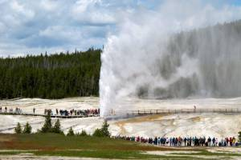

SODA SPRINGS

Weather Summary
High: ºF
Wind Chill:
Humidity: %
Wind Speed: mph
5 Day Forecast
ºF |
ºF |
ºF |
ºF |
ºF |
Upcoming Events
How to survive winter even if you really, really hate it
Let me start with a confession: My name is Nataly, and I really, really hate winter . (Now you say, “Hi, Nataly!”)
I hate the way the frigid cold makes your bones hurt. I hate the freezing wind that leaves your face feeling like it was kissed by sandpaper. I hate the snow that makes walking and driving a battle. I hate the hours it takes to get dressed in all the endless layers just to step outside! Did I mention the snow?
I start dreading winter in October, as if preparing for hating winter earlier will help me deal with it better when it eventually arrives. (Which is a complete waste of time and a complete waste of the short-lived, beautiful October New England weather that I do love.)
But what I hate even more than winter is spending several months every year stuck in an emotional state of total dread. I can’t change the weather here in Boston, and while I like to joke about picking up and moving somewhere warm, my small but close-knit family is here, and so is my work. I won’t pretend that winter and I will ever become BFFs, but I’ve decided to come up with a few ways to make some peace with it. I hope some of these tips can also help you deal with winter better, and possibly we’ll all even find a little joy in it (I can dream).